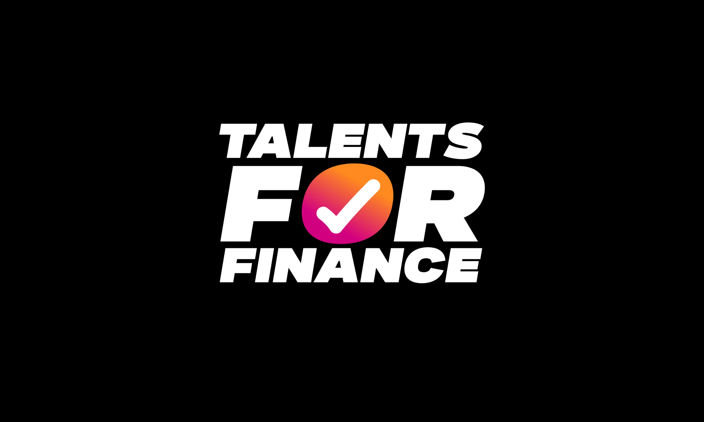
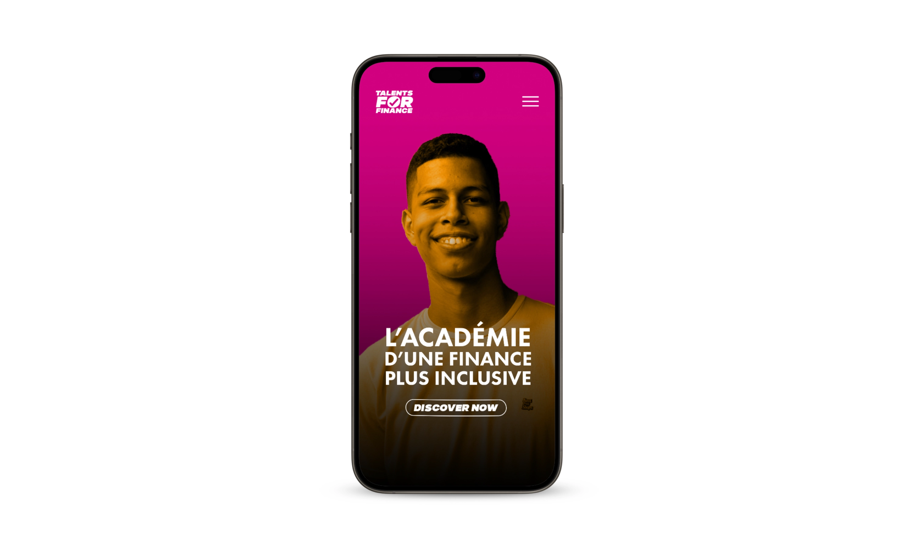
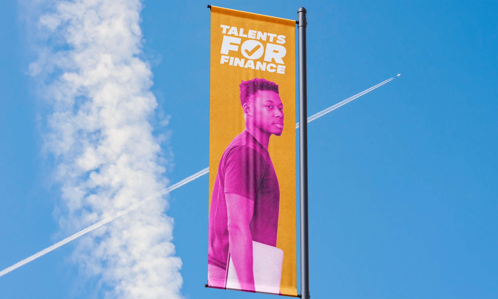
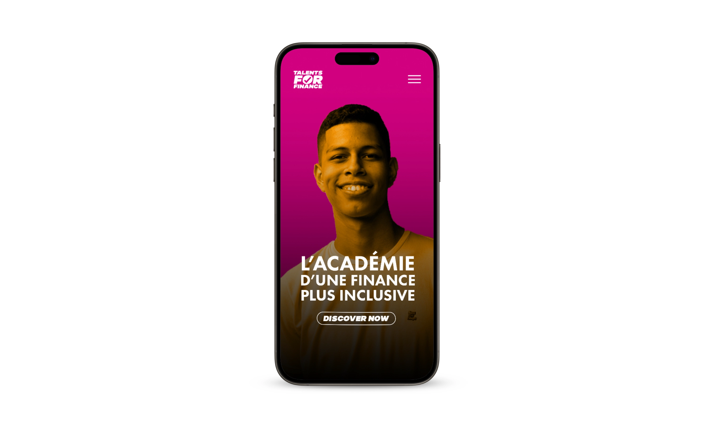
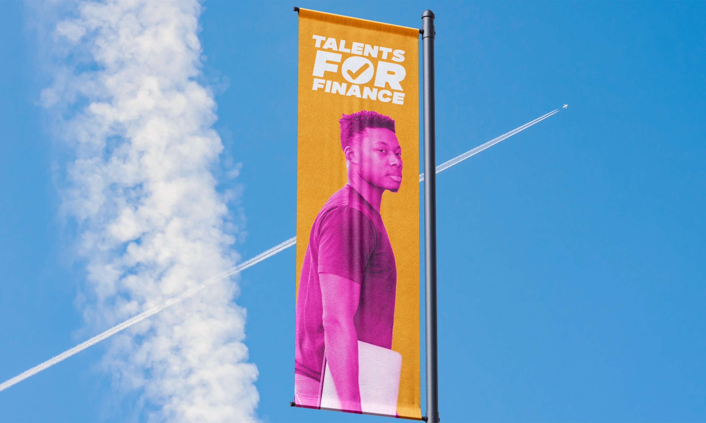

Talents for Finance
Identité Visuelle & Webdesign
Découvrez l'académie d'une finance plus inclusive
Le programme de Talents for Finance choisi 10 bacheliers venant de province et banlieue, et leur offre un aperçu des métiers de la Finance sur une durée de 2 ans.
Un projet philanthropique auquel je m'identifie
Pour créer cette identité visuelle, mes mots d'ordre étaient la diversité, l'égalité des chances et des codes visuels jeunes (quelque chose de "TikTok-friendly"). Concernant le site internet, je l'ai conçu sur Webflow : ce projet m'a servi d'introduction à ce CMS.
Année
Décembre 2024
Read in English üá¨üáß